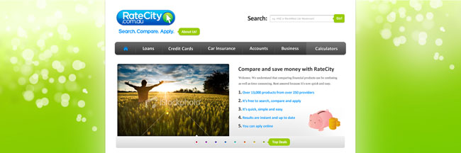
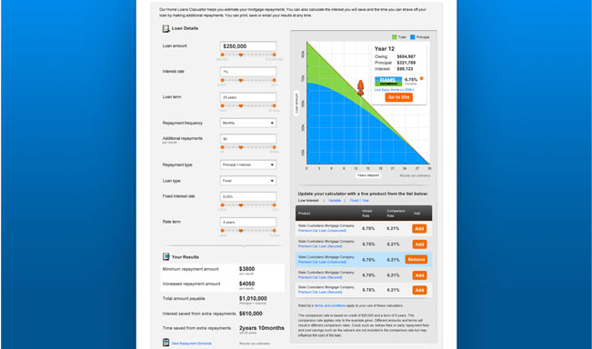
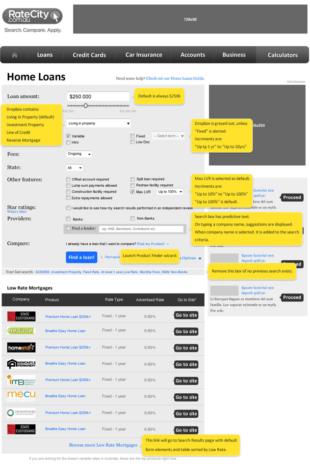
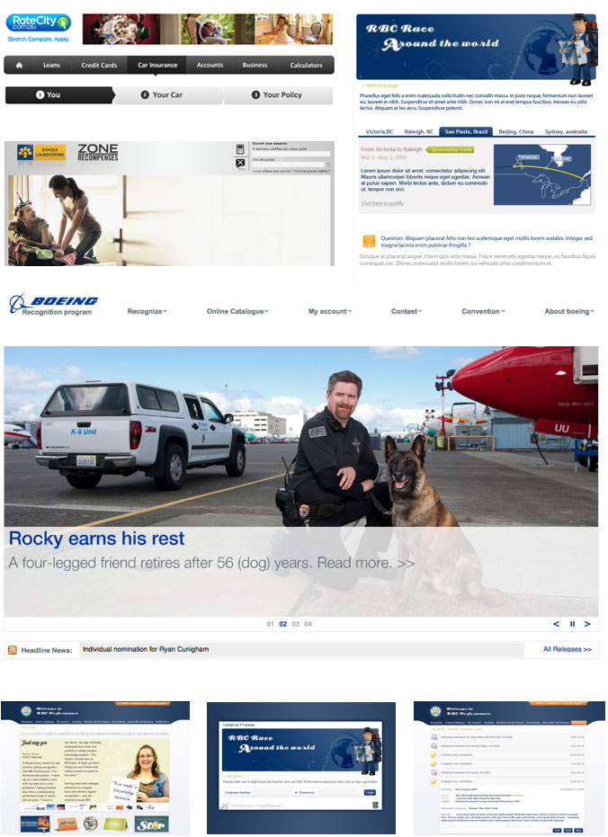
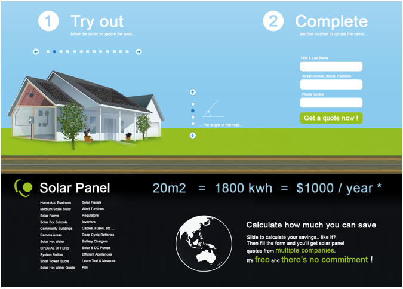
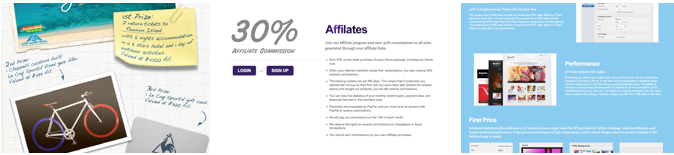

Web development and UI design
After having developed my teaching skills by sharing my programming knowledge through lecturing in different universities, I took the step to move into front end developing. Design was more of a passion for me than the architecture of a database.
At this time UX design was a nascent industry, and I continued independent research across the web, studying the different forms of web interaction.
I believe my programming background, most notably javascript has driven and enabled my imagination for the best possible permutations in user experience.
With this experience, I can also follow the project through from concept, prototype and full realization, with a clear understanding from beginning to end.
My philosophy is always to start from the user's point of view, and building on a deep understanding of their experience.
Portfolio
Profesional skills
- Languages : Javascript, Ruby, C#, Java, PHP, Action Script, XHTML, CSS, FBML, XAML, MXML
- Frameworks & SDK: JQuery, Rails, webGL, Raphael, Prototype, JSON, Processing
- Operating system: Mac OS X, Windows, Linux
- Softwares: Adobe suite (complete), Eclipse, Visual Studio, Flex Builder, Microsoft Expression.
- Collaborative management tool: Git, Pivotal tracker, Mantis, Jira
- Methodologies: Agile, User Centered Design, User scenario,Usability testing
Interaction design
In this comparison site, the attention was centered around helping the user choose a product between a large range of products. In order to help to refine the choice, I created a watch list allowing the user to select the product he might be interested in.
This way he can go through the huge list of products and make a comparison between selected products more easily.
Ratecity.com.au
-
Fast SEARCH
In order to help the user to find the best product quickly, all the parameters are easily accessible by refining the search via ajax without reloading the full page
Slider are here to make the search even quicker.
-
Inform the user
According to the search, some products selected might be not available. A color code is use to alert him.
This part of the table named the "decanter" is always visible at the top of the page even if the user scroll down.
-
Be social
One of the best way to make a decision is to share the information to discuss it. Mail, print, bookmark. And soon +1...
Hints appear on hover state in order to define symbols that might not be recognized
Interface experiences are explored and defined through the use of whiteboard sketches, wireframes and prototypes.
Interface design
Websites for Ratecity, Laurentienne Bank, Boeing and Royal Bank Canada.
Design for the web site Solar panel (in construction)
 - Facebook application Competition integrated in Facebook
- Sales forces integration Targeting affiliates
- Wordpress Template Product catalogue template.
Curriculum Vitae
Employment
Senior developer, Soap Creative; Sydney
- Frontend, backend and lead developer for different Soap Creative websites. My responsibilities include:
- - Define the best technology for the developments
- - Define the architecture
- - Time estimation
- - Creation of responsive website
- - Creation of web and mobile application
- - Creation of hybrid app for IOS and Android
- - Creation of facebook competitons, EDM etc...
- - Task and process automation
- - Presentations to the team on new technology
Interaction designer and Front-end developer, Ninemsn; Sydney
- Web developer and UX designer on Ratecity's suite of websites. My responsibilities include:
- - Data Visualisation and page UI Interactions
- - Owner of Ratecity front-end technology
- - Guidance for site visual and behavioural direction
- - Guidance of site technological direction
- - On time production of cross browser compatible web pages
Interaction designer and Front-end developer, Rideau Recognition; Montreal
- Worked on Boeing, RBC Bank, Laurentienne Bank, H&R block, Desjardins bank websites as:
- - Designer (User centered design process, usability and accessibility testing, PSD, optimisation)
- - Integrator (XHTML, CSS, JQuery, all trident, gecko and webkit support including ie6...)
- - ASP.NET and Flash developer (Extreme programming, Agile, test driven development)
- Key team member supporting and developing collegues.
- Ensured 100% client renewal.
Training instructor, SUPINFO; Bordeaux, Paris (France), Montreal (Canada), Beijing, Tianjin et Qingdao(China)
- Taught programming languages for 1150 students of Master of Technology
- - Internet Technologies [X]HTML, CSS, JavaScript, XML, PHP
- - C#, Windows Applications, ASP.NET
Developer, TDM (THALES); Bordeaux (Internship - 3 months)
- - Developed best practice application for order management and delivery notes
- - Built intranet for the service quality of the company.
Developer, NextiraOne (ALCATEL); Bordeaux (Internship -2 months)
- - Pivotal team member in creation of a surveillance of highways (C++)
Freelance work
Designer/ Developer, Le coq Sportif; Sydney
- Facebook application - functional competition
Print Graphist, Inna Riddim; Sydney
- Vinyl covers for Compa, Grimace, Juzlo, Ritual
Designer/ Flash Developer, SYTWEB; Bordeaux
- - Prototyping user ineterfaces and design
- - Achieved successful completion of various client projects
- - Created XML and SQL components for flash
Creation of the website for a sculptor Baurens and the painter Pablo Corea
- - Photo realisation, prototype, integration and developement in PHP
Education
- SUPINFO , Paris - European Masters' Degree, Computer Science,
- EPSI , Bordeaux - Bachelors Degree,
- Saint Joseph , Perigeux - IB Science (equiv HSC),